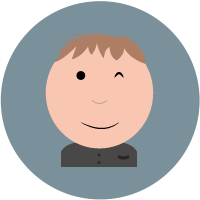
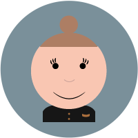
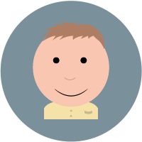
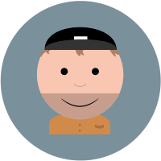

Mikkel Zibrandtsen
Jeg er 20 år gammel og bor på vesterbro. Jeg er oprindeligt fra fløng (en lille by, der ligger lige ved roskilde). Jeg bruger meget af min fritid på at se fodbold. Derudover pendler jeg ofte frem og tilbage fra århus, da min kæreste er flyttet derover for at studere.

Nanna Merrild
Jeg er 25 og kommer fra Gilleleje. Jeg bruger min fritid på at fotografere og skrive. Jeg elsker historie, kunst, design, fotografi, engelsk, og sci-fi.

Kevin Willaim Bast
Jeg er 22 år ung gut, født og opvokset i Rødovre. På trods af at være fra det farlige Vestegnen, så holder jeg ikke med Brøndby IF, men derimod den smukke klub fra hovedstaden. Fritiden bliver brugt på at se bold, træne og ses med mine venner.
Har tidligere gået til fodbold, hvor jeg da også scorede et fint kluddermål en gang, og endnu længere tilbage, taekwondo som jeg har det sorte bælte i. Men gymnasiet og øller kom i vejen for sportskarrieren.
Ismail Imanov
Jeg er 21 år gammel og bor i Herlev. Jeg arbejder for et medie bureau ved navn AZ Web hvor jeg også ejer 1/3 del af virksomheden. Jeg bruger meget af min fritid på at være sammen med vennerne, hvor der bliver spillet en omgang bold eller hvor turen går til fitness.

Mads Høimark
Jeg er 23 år gammel og bor på Østerbro. Jeg arbejder hos Danske Spil A/S, hvor jeg snakker med forhandlerne.
Mikkel
Har arbejdet meget med hjemmesider. har hjulpet mange med at få en hjemmeside op og køre.
Nanna
Har pt ingen erfaring.
Kevin
Haft et semester visuelt design og analyse, da jeg gik på universitetet.
Ismail
Har arbejdet med grafik og hjemmesider i næsten 10 år nu.
Mads
Selvstudie i Illustrator (øvet).
Mikkel
Tog og Bus
Nanna
Bil og/eller tog.
Kevin
40 minutters lummer bustur.
Ismail
Bil
Mads
Bus
Mikkel
Roskilde handelsgymnasium
Nanna
Helsingør gymnasium.
Kevin
Herlev Gymnasium.
Ismail
Handelsskolen KNord Lyngby
Mads
Hillerød Handelsskole (HHX - Markedskommunikation)
Mikkel
Jeg har arbejdet meget med hjemmesider og billedbehandling, og vil derfor gerne have en uddannelse indenfor området
Nanna
Det lød kreativt og spændende.
Kevin
Det lød spændende :)))
Ismail
Det lød interessant
Mads
Jeg har valgt Multimediedesign, fordi jeg søgte et studie hvor teori blev brugt i praksis og et studie hvor ens kreativitet var vigtig.
Mikkel
At styrke mine kompetencer, så jeg kan studere videre
Nanna
At få kreative og faglige kompetencer jeg vil kunne bruge på tværs af landegrænser.
Kevin
At styrke mine faglige kompetencer.
Ismail
At kunne lære ting som jeg måske ikke vidste i forvejen.
Mads
Få en bedre forståelse for de indgående fag, samt en dybdegående undervisning i digital markedsføring.
Mikkel
Mit mål er at studere videre, så jeg evt. kan komme ind på ITU.
Nanna
At få gode muligheder for job.
Kevin
Da forhåbentligt at få et job. Ellers bliver min far skuffet.
Ismail
At starte mit eget virksomhed op.
Mads
Art Director